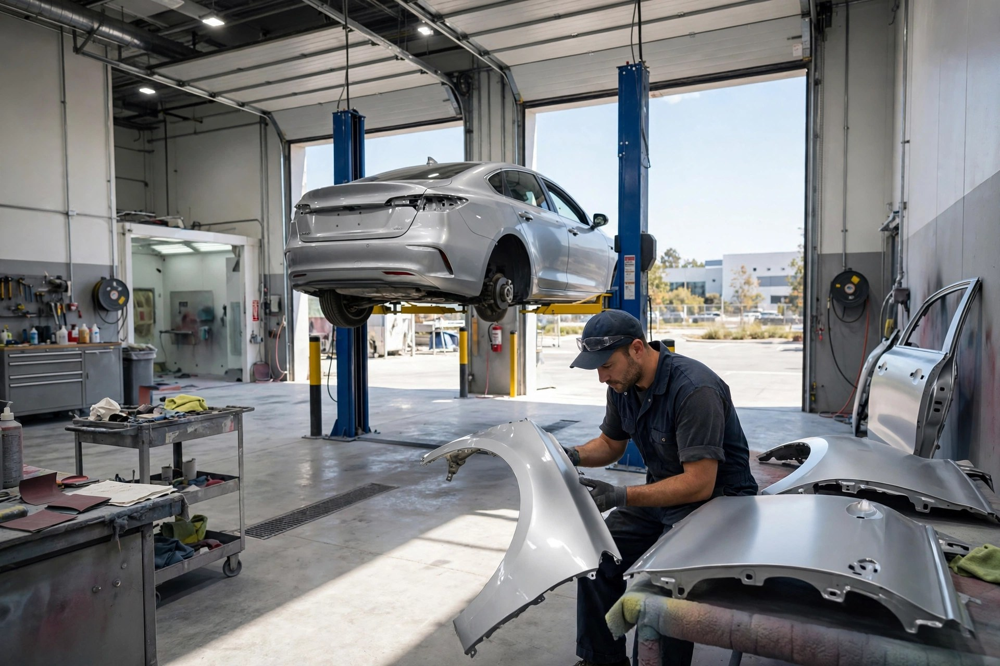
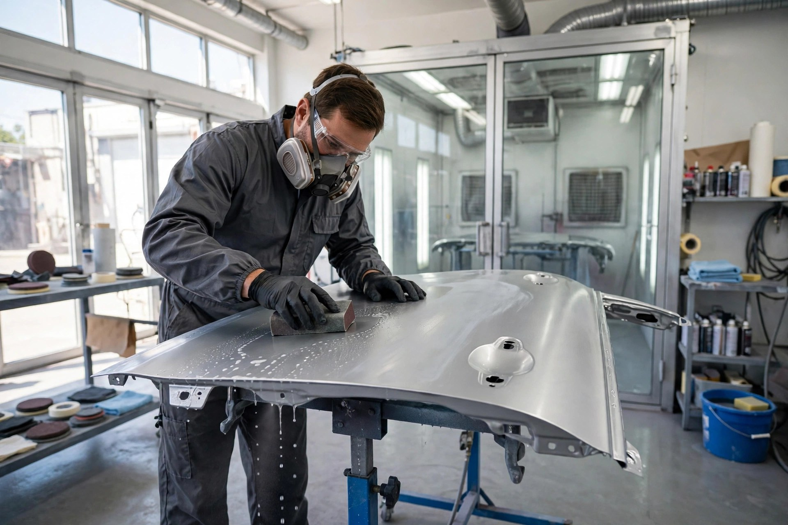
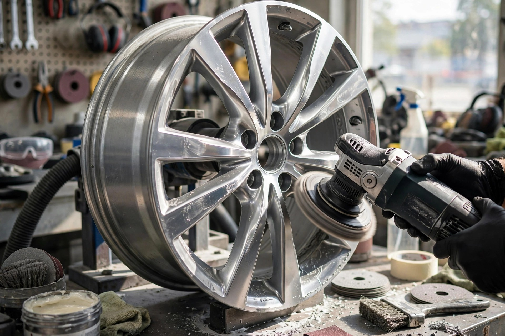
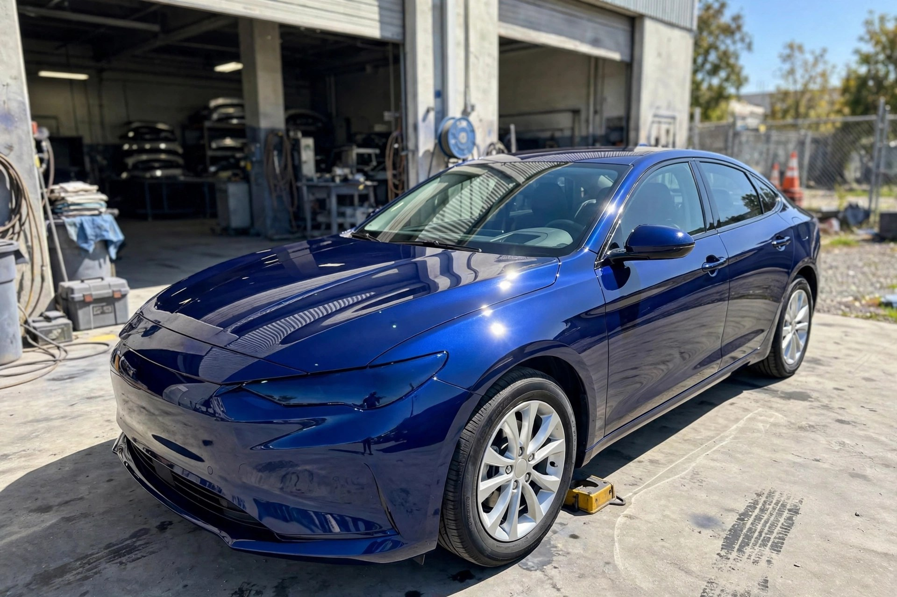

Body Repairs
All aspects of body repairs — accident damage, panels, bumpers and structural work, finished to factory standard.

Liverpool · Car body repairs done properly
Rated 4.9 out of 5 on Yell from 7 reviews — all aspects of body repairs, from insurance work and full repaints to alloy wheel repairs and recovery.
What we do
All aspects of body repairs — accident damage, panels, bumpers and structural work, finished to factory standard.
We handle insurance claims and approved repairs — liaising with your insurer so the process is hassle-free.
Full body repaints and resprays in our spray booth — colour-matched, baked and polished for a lasting finish.
Alloy wheel refurbishment — kerb damage, corrosion and scuffs repaired and refinished to look like new.
Paintless dent removal, scratch repairs and localised touch-ups — small jobs done right, without repainting the whole panel.
Vehicle recovery when you can't get to us — call 07988 488002 and we'll arrange collection.

Why choose us
Customers come to C+S Autobodies because the work is done properly: panels aligned, paint colour-matched, and every job finished to a standard we'd put our own name on.
The shop in action


What customers say
Good to know
Yes — estimates are free. Call us on 07988 488002 or bring the car to Unit 8 Shaw Rd and we'll give you a clear price before any work begins.
Yes — we carry out insurance work and deal directly with insurers on accident repairs, so the claim process is straightforward for you.
Yes — full body repaints and resprays are one of our specialties, with colour-matched paint baked in our spray booth for a lasting finish.
Yes — we offer a recovery service. Call 07988 488002 and we'll arrange to collect your vehicle.